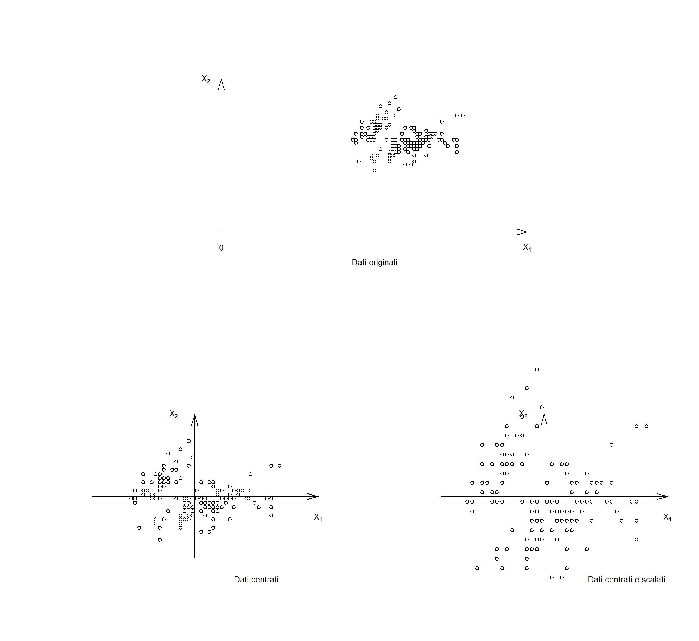
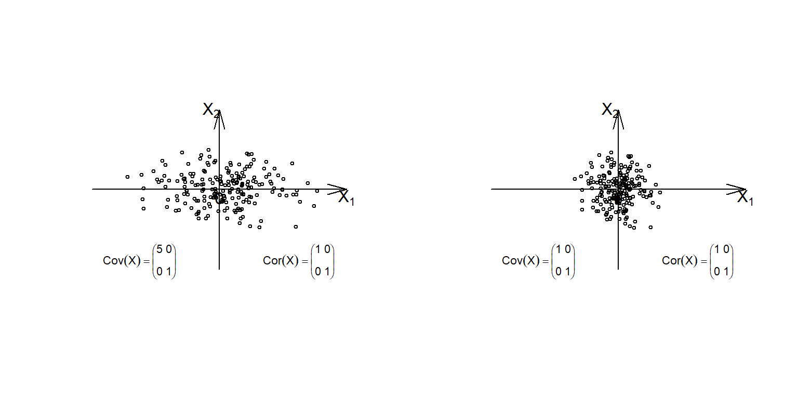
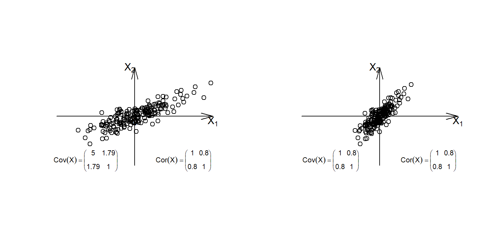

Capitolo 1 Dati multidimensionali
1.0.1 Rappresentazione matriciale e geometrica

1.0.2 Trasformazione delle variabili: centratura e standardizzazione
Indichiamo con \(\bar{x_1},\dots,\bar{x_p}\) le medie delle variabili \(X_1,\dots,X_p\),
cioè le \(p\) medie delle \(p\) colonne della Tabella , e con
\(\sigma_1^2,\dots,\sigma_p^2\) le rispettive varianze.
Il vettore \(\bar{x}=(\bar{x_1},\dots,\bar{x_p})\) viene chiamato baricentro.
Centratura: semplice traslazione del baricentro nell’origine \[\begin{equation} x_{ij}^{'}=x_{ij}-\bar{x_j} \end{equation}\]
- non perdo informazione sulla distanza tra i punti (la geometria della nuvola di punti rimane invariata)
- perdo solo informazione sul baricentro
- semplifica formule e conti (da ora in poi useremo sempre dati centrati)
Standardizzazione: questa trasformazione porta ogni variabile ad avere varianza \(1\) (in generale questa trasformazione viene fatta insieme alla centratura) \[\begin{equation} x_{ij}^{'}=\frac{x_{ij}-\bar{x_j}}{\sigma_j} \end{equation}\]
- questa trasformazione rende le variabili degli scalari (numeri puri)
- questa trasformazione è necessaria quando si vogliono confrontare variabili con differenti unità di misura (le variabili devono essere omogenee per essere confrontabili)
- tutte le variabili hanno lo stesso “peso”
- cambia la distanza (la geometria) tra i punti. E’ una dilatazione o contrazione.
Si veda la seguente figura per una rappresentazione grafica di dati centarti e scalati per una matrice di dati di \(2\) variabili

1.0.3 Matrice di covarianza e correlazione
\[\begin{equation}\label{eq:Corr}
Cov(X)=\left(
\begin{array}{cccc}
\sigma_{11} & \dots & \sigma_{1p} \\
\vdots & \quad & \vdots \\
\sigma_{m1} & \dots & \sigma_{pp} \\
\end{array}
\right),
\end{equation}\]
dove \(\sigma_{ij}=\frac{1}{m-1}\sum_{k=1}^m(x_{ki}-\bar{x_i})(x_{kj}-\bar{x_j})\) è la covarianza tra
le variabili \(X_i\) e \(X_j\),
e in particolare
\(\sigma_{ii}=\sigma_i^2=\frac{1}{m-1}\sum_{k=1}^m(x_{ki}-\bar{x_i})^2\) è la varianza della variabile
\(X_i\).
Nel caso in cui i dati siano centrati \(Cov(X)=\frac{1}{m-1}X^tX\)
\[\begin{equation}\label{eq:Corr} Cor(X)=\left( \begin{array}{cccc} 1 & \dots & r_{1p} \\ \vdots & \quad & \vdots \\ r_{m1} & \dots & 1\\ \end{array} \right), \end{equation}\] dove \(r_{ij}=\frac{\sigma_{ij}}{\sqrt{\sigma_{ii}\sigma_{jj}}}\) è la correlazione tra le variabili \(X_i\) e \(X_j\).


1.0.4 Variabili latenti o componenti e proiezioni
Sia \(T\) la combinazione lineare delle variabili \(X_1,\dots,X_p\), ossia il vettore (si veda Figura ) \[\begin{equation} T=b_1X_1+\dots+b_pX_p, \end{equation}\] dove \(b_1^2+\dots+b_p^2=1\). Il vettore \(\bold{b}=(b_1,\dots,b_p)\) è chiamato versore e indica la direzione della variabile latente \(T\) (si veda Figura ).
Figura 1.1: Variabile latente \(T\)
Sia \(\bold{x}=(x_1,\dots,x_p)\) un generico punto (vettore) di \(\mathbf{R^p}\). Chiamiamo proiezione di \(\bold{x}\) su \(T\) il punto \(\bold{x'}\) di \(T\) la cui distanza da \(\bold{x}\) è minima (si veda Figura )
Figura 1.2: Proiezione su \(T\)
Definiamo componente di x su T la lunghezza del vettore \(\|\bold{x'} \|\) data da \[\begin{equation} \|\bold{x'}\|=b_1x_1+\dots+b_px_p. \end{equation}\] I valori \(b_1,\dots,b_p\) sono chiamati loading e la quantità \(b_1x_1+\dots+b_px_p\) score.
Si osservi che \[\begin{equation} \| \bold{x'} \|=\|\bold{x} \|\cos \theta \end{equation}\] ossia al prodotto interno (scalare) tra i vettori \(\bold{x}\) e \(\bold{b}\) (\(\| \bold{b}\|=1\)). Si veda la Figura .
Figura 1.3: Prodotto interno tra x e b
Proiezione degli \(m\) individui della matrice X sulla variabile latente T \[\begin{equation} \left( \begin{array}{cccc} x_{11} & \dots & x_{1p} \\ \vdots & \quad & \vdots \\ x_{m1} & \dots & x_{mp} \\ \end{array} \right) \left( \begin{array}{c} b_1 \\ \vdots \\ b_m \\ \end{array} \right) = \left( \begin{array}{cccc} b_1x_{11} + \dots +b_p x_{1p} \\ \vdots \\ b_1x_{m1} + \dots + b_px_{mp} \\ \end{array} \right). \end{equation}\]
Supponiamo di prendere una seconda variabile latente \[\begin{equation} T'=b'_1X_1+\dots+b'_pX_p, \qquad (b'_1)^2+\dots+(b'_p)^2=1 \end{equation}\] e supponiamo che sia ortogonale a T (i.e b e b’ ortogonali) \[\begin{equation} b_1b'_1+\dots+b_pb'_p=0. \end{equation}\] Si veda la Figura .
Figura 1.4: Proiezione sul piano TT’
Proiezione degli \(m\) individui della matrice X sul piano TT’ \[\begin{equation} \left( \begin{array}{cccc} x_{11} & \dots & x_{1p} \\ \vdots & \quad & \vdots \\ x_{m1} & \dots & x_{mp} \\ \end{array} \right) \left( \begin{array}{cc} b_1 & b'_1\\ \vdots & \vdots \\ b_m & b'_p\\ \end{array} \right) = \left( \begin{array}{cccc} b_1x_{11} + \dots +b_p x_{1p} & b'_1x_{11} + \dots +b'_p x_{1p}\\ \vdots & \vdots \\ b_1x_{m1} + \dots + b_px_{mp} & b'_1x_{m1} + \dots + b'_px_{mp} \\ \end{array} \right). \end{equation}\]
E’ possibile iterare questo procedimento fino a p variabili latenti, in questo caso otteniamo un cambio di basi (nuove coordinate). Abbiamo semplicemente “cambiato prospettiva” ruotando il sistema di coordinate. Si veda la Figura .
E’ possibile fermarsi prima e proiettare su un iperpiano,
Questo procedimento viene in generale eseguito perchè le variabili latenti hanno certe proprietà desiderate.
Indicando con \[\begin{equation} P= \left( \begin{array}{cccc} b^1_1 & b^2_1 & \dots & b^p_1 \\ \vdots &\vdots & \quad & \vdots \\ b^2_m & b^2_m & \dots & b^p_m \\ \end{array} \right) \end{equation}\] la matrice dei loading, si ha \[\begin{equation} T=XP \end{equation}\] e ricordando l’ortonormalità dei vettori \(\bold{b}_1,\dots,\bold{b}_p\) (\(P^tP=I\)) \[\begin{equation} X=TP^t \end{equation}\]
Figura 1.5: Cambio base da \(X_1X_2\) a \(T_1T_2\)
P=matrix(c(1/sqrt(2),1/sqrt(2),-1/sqrt(2),1/sqrt(2)),ncol=2)
T=X%*%P
head(T)## [,1] [,2]
## [1,] -0.8819306 0.469438535
## [2,] -1.1965330 -1.084705155
## [3,] 0.8871902 0.024327783
## [4,] -1.0638267 0.008888563
## [5,] -1.3798502 -0.102959280
## [6,] -1.3998573 -0.1648159341.1 Analisi delle componenti principali
Vogliamo costruire le variabili latenti \(T_1,\dots,T_p\) in modo da massimalizzare la distanza
tra gli \(m\) oggetti in \(\mathbb{R}^p\), le cui coordinate sono date dalla matrice \(X\) (cf. ),
nel senso che punti lontani in \(\mathbb{R}^p\) siano il più
lontano possibile nelle proiezioni su \(T_1\), poi \(T_2\),……
La distanza tra i punti può essere misurata usando il teorema di Pitagora, distanza euclidea,
e questa è la formula della varianza delle variabili \(X_1,\dots,X_p\).
Vogliamo massimalizzare la varianza, perchè ad essa è associata l’informazione contenuta nei dati
in esame.
In definitiva vogliamo massimalizzare l’informazione ricavabile dagli oggetti in esama (varianza).
E’ posssibile determinare una variabile latente \(T_1\), che chiameremo Prima Componente Principale, in modo tale che
\[\begin{equation}
Var (T_1)=\rm{Max}_{\it{T}}\it{Var(T)}
\end{equation}\]
al variare di tutte le direzioni possibili \(T\) in \(\mathbb{R}^p\).
Tra tutte le variabili latenti perpendicolari alla \(T_1\) è possibile determinare una seconda
variabile latente \(T_2\), che chiameremo Seconda Componente Principale in modo tale che
\[\begin{equation} Var (T_2)=\rm{Max}_{\it{T\perp T_1}}\it{Var(T)} \end{equation}\]
Questo procedimento può essere iterato fino alla costruzione di \(p\) componenti principali \(T_1,T_2,\dots,T_p\).
Per quanto visto nel Paragrafo abbiamo determinato la matrice \(P\) dei loading. La matrice degli score si ottiene \[\begin{equation}\label{eq:Score} T=XP \end{equation}\]
La procedura per determinare \(P\) passa attraverso il calcolo degli autovalori \(\lambda_1,\dots,\lambda_p\) della matrice di covarianza (di correlazione nel caso in cui i dati fossero stati standardizzati) \[\begin{equation} Cov(X)=X^tX \end{equation}\]
e dei relativi autovettori (le \(p\) componenti principali).
Uno dei risultati principali di questa costruzione è che nel sistema di coordinate delle componenti principali
\[\begin{equation}\label{eq:Corr} Cov(T)=\left( \begin{array}{cccc} \lambda_1 & \dots & 0 \\ \vdots & \quad & \vdots \\ 0 & \dots & \lambda_m \\ \end{array} \right), \quad \lambda_1 \geq \lambda_2 \geq \dots \geq \lambda_m \end{equation}\]
Conseguenze
- \(Var(T_i)=\lambda_i\)
- varianza totale: \(\lambda_1+\dots+\lambda_p\)
- le componenti \(T_1,T_2,\dots,T_p\) sono a indipendenti